Pattern / Contextual
Contextual Agent Panel
사용자가 현재 화면을 유지한 채, 측면 또는 오버레이 패널에서 화면 맥락을 기준으로 AI와 상호작용하는 UI 패턴입니다. 보고 있는 화면·선택 객체·문서·데이터를 기준으로 질문하고, 필요한 경우 결과를 현재 화면에 반영합니다.
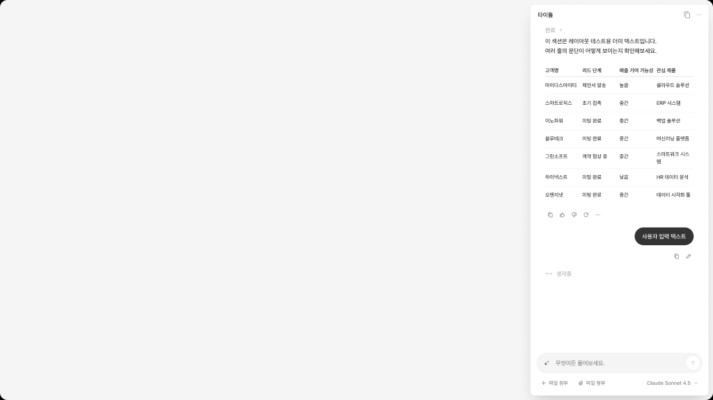
Overview
Contextual Agent Panel은 사용자가 현재 화면을 유지한 채, 측면 또는 오버레이 패널에서 AI와 상호작용할 수 있게 하는 UI 패턴입니다. AI는 독립된 전역 챗처럼 동작하기보다, 사용자가 보고 있는 화면·선택 객체·문서·데이터를 기준으로 도움을 제공합니다. 사용자는 현재 작업 화면을 벗어나지 않고 AI에게 질문하거나, 요약·분석·추천·다음 액션을 요청하고, 필요한 경우 결과를 원래 화면에 반영할 수 있습니다. 이 패턴은 사용자의 주 작업 화면은 유지하면서, AI와 어느 정도 지속적인 대화나 반복 요청이 필요한 경우에 적합합니다.
이 분류를 선택하는 경우
| 선택 조건 | 설명 |
|---|---|
| 현재 화면을 유지해야 한다 | 별도 챗 화면이나 작업공간으로 이동하지 않고, 현재 화면을 보면서 AI 도움을 받아야 하는 경우 |
| AI가 현재 화면 맥락에 강하게 의존한다 | 고객 상세, 문서, 목표, 회의록, 데이터 테이블 등 현재 화면의 정보가 AI 응답의 주요 기준이 되는 경우 |
| 짧은 제안보다 지속적인 대화가 필요하다 | 단일 인라인 제안이 아니라, 질문과 후속 요청을 이어가며 도움을 받아야 하는 경우 |
| 메인 화면과 AI 응답을 함께 봐야 한다 | 사용자가 원본 데이터나 작업 화면을 확인하면서 AI 답변을 비교하거나 검토해야 하는 경우 |
| AI 결과를 현재 화면에 적용할 수 있어야 한다 | 요약, 추천, 수정안, 액션 제안을 원래 화면이나 데이터에 반영해야 하는 경우 |
| 화면 단위 보조 에이전트가 필요하다 | 제품 전역 챗이 아니라 특정 화면이나 업무 흐름에 맞는 AI 보조 경험이 필요한 경우 |
이 템플릿을 사용하지 않는 경우
| 선택하지 않는 경우 | 대신 고려할 패턴 |
|---|---|
| 서비스 어디서든 공통 AI를 호출하는 전역 챗이 필요하다 | Global Chat Assistant |
| 특정 작업이나 산출물을 완성하기 위한 전용 작업공간이 필요하다 | Dedicated Agent Workspace |
| 특정 텍스트나 필드 주변에서 짧게 AI 제안을 받으면 된다 | Embedded AI Elements |
| AI 작업이 백그라운드에서 실행되고 사용자는 상태만 확인하면 된다 | Background Task Monitor |
Key Characteristics
| 구분 | 내용 |
|---|---|
| 진입 방식 | 화면 내 AI 버튼, 우측 패널 열기, 선택 객체 기반 호출, 추천 질문, 오버레이 호출 |
| 입력 방식 | 자연어 질문, 현재 화면 기준 요청, 선택 객체 기반 요청, 후속 질문 |
| 응답 방식 | 화면 맥락 기반 요약, 분석, 추천, 설명, 다음 액션, 적용 가능한 제안 |
| 컨텍스트 활용 | 현재 페이지, 선택 객체, 문서, 테이블, 고객 정보, 목표 정보, 회의록 등 |
| 사용자 흐름 | 화면 확인 → AI 패널 호출 → 맥락 기반 질문 → 응답 확인 → 적용 또는 후속 질문 |
| 주요 가치 | 현재 작업 흐름을 유지하면서 화면 맥락에 맞는 AI 도움 제공 |
주요 예시 레퍼런스
실제 제품에서 Contextual Agent Panel 패턴이 어떻게 구현되는지 보여주는 대표 사례입니다.
Atlassian Rovo Chat
Confluence, Jira, Jira Service Management, Jira Product Discovery, Bitbucket 안에서 호출할 수 있는 AI Chat입니다. 현재 사용자가 보고 있는 페이지나 업무 맥락을 유지한 채 우측 패널에서 질문하고, 답변 안에 출처를 표시해 사용자가 원문 근거를 확인할 수 있습니다. 특히 Confluence 문서 옆에서 질문을 던지고, 문서 내용 기반 답변과 citation을 함께 보여주는 구조는 Side Agent Panel의 대표적인 사례로 볼 수 있습니다. Atlassian도 Rovo Chat을 Jira, Confluence 등에서 작업 흐름을 방해하지 않고 사용할 수 있다고 설명합니다.
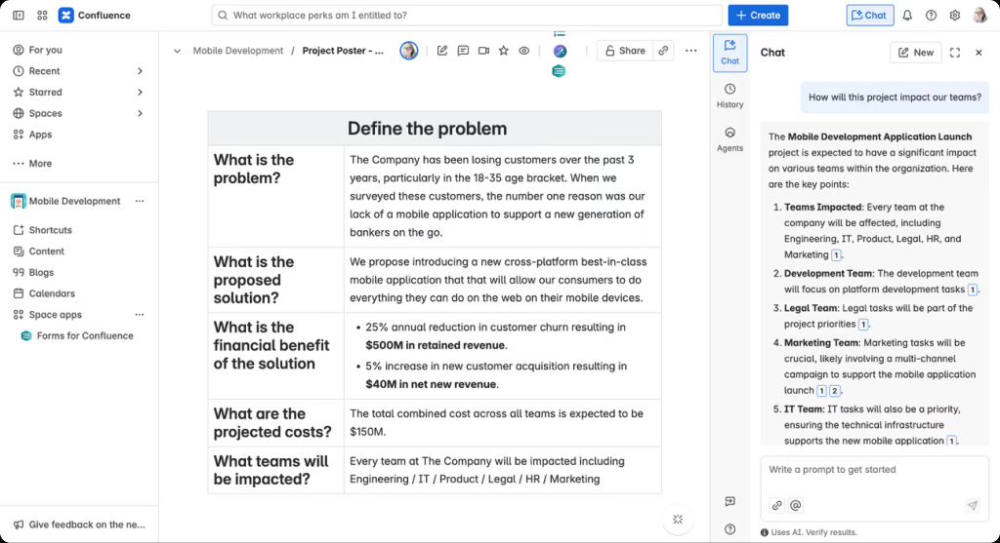
Google Workspace Gemini Side Panel
Gmail, Docs, Sheets, Slides, Drive 등 현재 사용 중인 Workspace 앱 안에서 사이드 패널로 호출되어 요약, 분석, 콘텐츠 생성을 지원합니다. 사용자가 앱을 전환하지 않고 현재 문서·메일·파일 맥락을 유지한 채 AI 도움을 받을 수 있다는 점에서 Contextual Agent Panel의 대표 사례로 볼 수 있습니다.
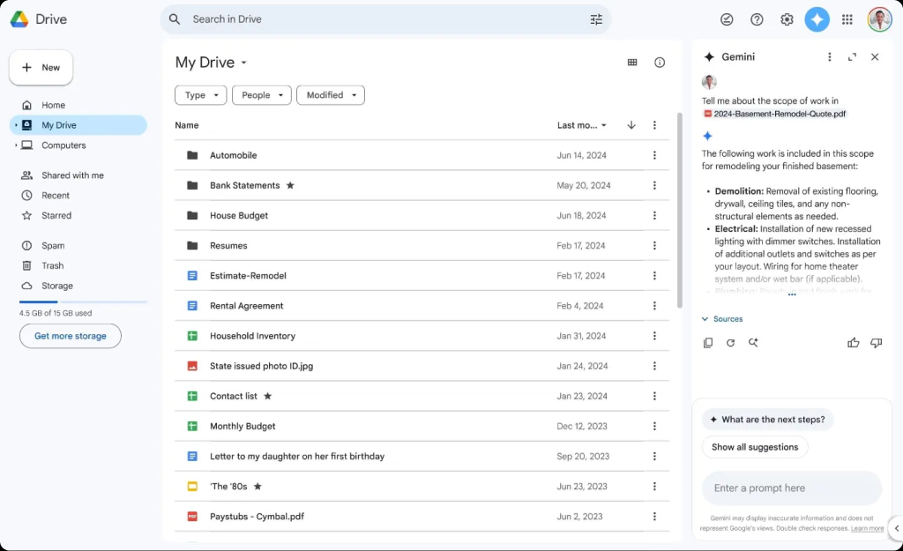
Microsoft 365 Copilot Chat
Word, Excel, PowerPoint, Outlook, OneNote 같은 Microsoft 365 앱 안에서 문서나 메일 옆에 Copilot Chat을 열어 사용할 수 있습니다. 사용자는 현재 작업 중인 문서·메일·스프레드시트를 보면서 요약, 작성, 분석, 수정 요청을 입력하고, Copilot은 앱 맥락에 맞는 응답과 추천 프롬프트를 제공합니다. Microsoft는 Copilot Chat이 일부 Microsoft 365 앱에서 side-by-side 방식으로 제공된다고 설명합니다.
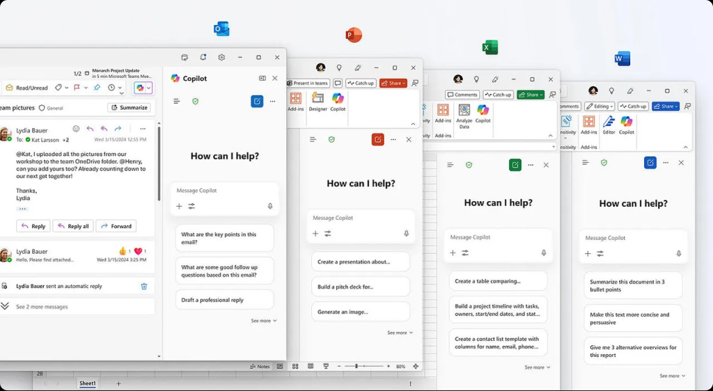
Basic Layout Structure
Contextual Agent Panel은 사용자가 현재 화면을 유지하면서 AI 도움을 받을 수 있도록, 메인 화면 옆이나 위에 AI 패널을 배치하는 구조를 가집니다. 하위 분기에 따라 Side Agent Panel 또는 Overlay Panel로 나뉘지만, 기본적으로는 Main Context Area, Panel Entry Point, Agent Panel, Context Binding Area, Action Area로 구성됩니다.
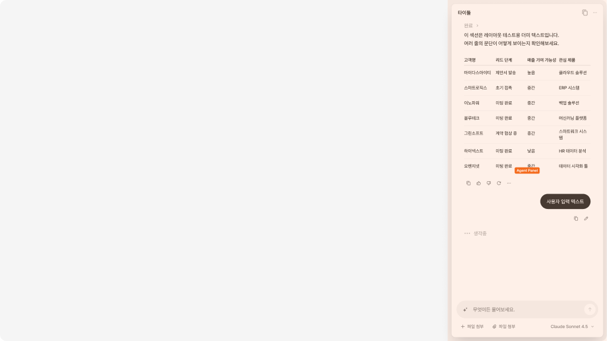
레이아웃 원칙
| 원칙 | 설명 |
|---|---|
| 화면 맥락 보존 | AI 패널이 열려도 사용자가 원래 화면의 정보와 작업 흐름을 유지할 수 있어야 합니다. |
| 패널과 본문 역할 분리 | 메인 화면은 원본 작업 공간, 패널은 AI 보조 공간으로 역할이 명확해야 합니다. |
| 컨텍스트 명확성 | AI가 어떤 화면, 객체, 데이터 기준으로 답변하는지 표시해야 합니다. |
| 지속 대화 가능성 | 사용자가 후속 질문이나 수정 요청을 이어갈 수 있도록 대화 흐름을 유지해야 합니다. |
| 적용 가능성 | AI 응답이 단순 안내에서 끝나지 않고, 현재 화면의 작업이나 데이터에 연결될 수 있어야 합니다. |
| 공간 점유 최소화 | 패널은 충분한 정보를 담되, 메인 화면을 과도하게 가리거나 작업을 방해하지 않아야 합니다. |
Variants
Contextual Agent Panel은 AI 패널을 화면에 고정하는지, 임시로 띄우는지에 따라 하위 UI가 나뉩니다.
| 하위 분기 | 한 줄 정의 | 선택 기준 |
|---|---|---|
| Side Agent Panel | 메인 화면 옆에 고정된 측면 패널로 AI 도움을 제공 | 사용자가 현재 화면과 AI 응답을 동시에 보며 지속적으로 상호작용해야 할 때 |
| Overlay Panel | 현재 화면 위에 임시 레이어로 AI 도움을 제공하는 UI | 화면 이동 없이 짧고 집중적인 AI 작업을 처리해야 하지만, 고정 패널까지는 필요 없을 때 |
Side Agent Panel
메인 화면을 유지한 채 우측 또는 측면에 AI 패널을 고정해, 현재 화면 맥락을 기준으로 질문과 응답을 이어가는 UI입니다.
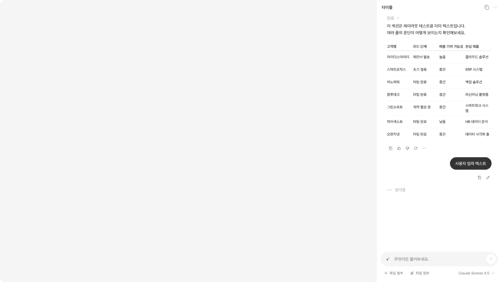
Overlay Panel
현재 화면 위에 임시 패널을 띄워, 짧고 집중적인 AI 요청을 처리하는 UI입니다.
Interaction
Trigger - Contextual Panel Call
사용자가 현재 화면의 AI 버튼, 선택 객체, 추천 질문, 패널 열기 버튼을 통해 AI 패널을 호출합니다.
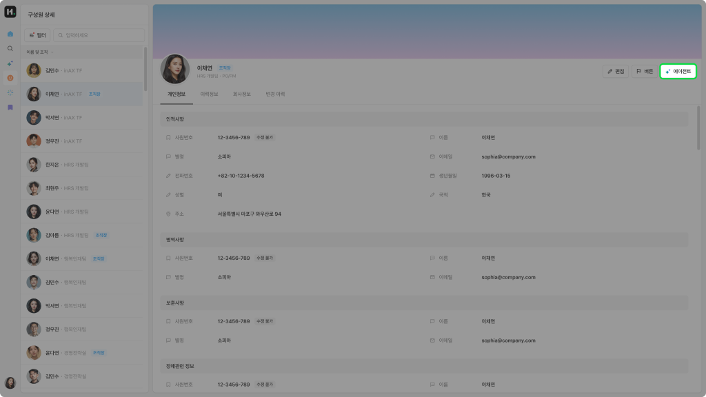
특정 기능 페이지 내의 버튼, 내비게이션 요소를 통해 AI Assistant를 호출합니다.
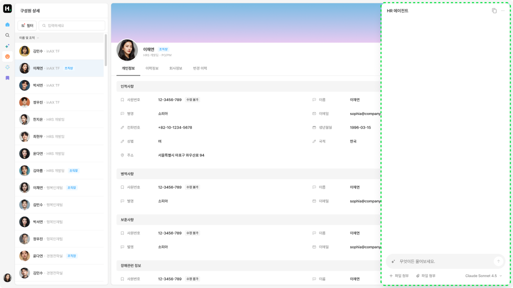
호출된 AI Assistant는 기존 연속된 사용 흐름을 끊지 않으며 나타납니다. UI는 자연어 기반 상호작용을 기반으로 하며, 기존 기능의 상호작용을 고려한 최소한의 사이즈를 갖습니다.
Input - Screen-bound Request
사용자는 현재 화면, 선택 객체, 문서, 데이터 맥락을 기준으로 자연어 질문이나 요청을 입력합니다.
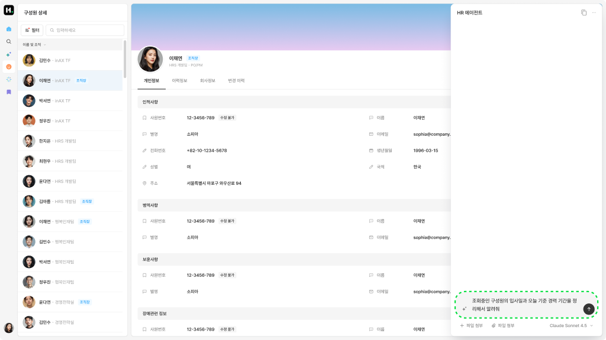
사용자는 Composer와 상호작용하여 질문, 요청, 명령, 조건 등을 자연어로 입력합니다.
Output - Contextual Response
AI는 현재 화면 맥락에 기반한 요약, 설명, 분석, 추천, 다음 액션을 패널 안에 제공합니다.
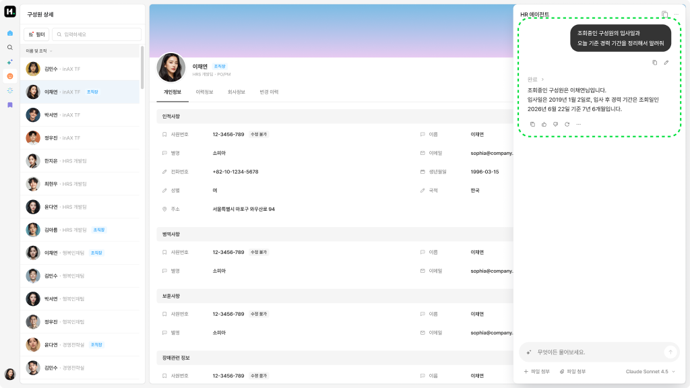
사용자의 요청사항에 따라 대화 기반의 응답을 제공합니다.
Follow up - Apply or Continue
사용자는 AI 응답을 현재 화면에 적용하거나, 관련 화면으로 이동하거나, 후속 질문을 이어갈 수 있습니다.
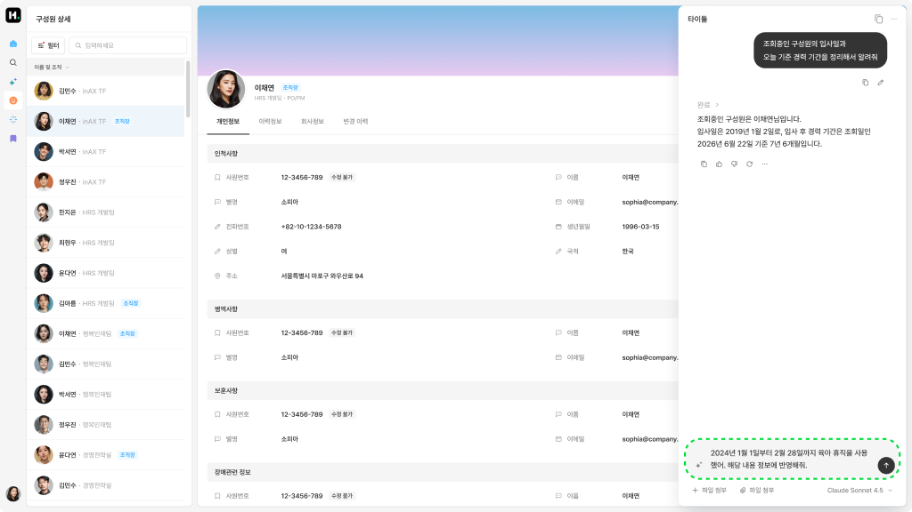
사용자가 자연어로 후속 질문을 요청할 수 있습니다.
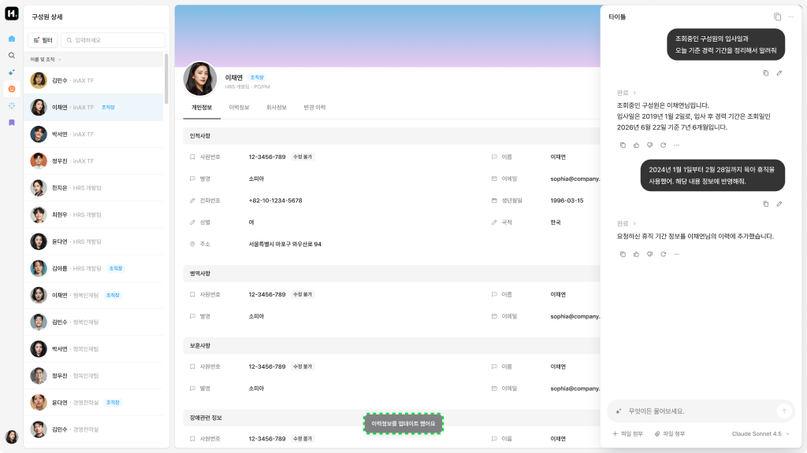
후속 요청에 대한 자연어 응답을 전달하며, 추가적으로 기능에 따라 기존 페이지의 정보 추가/변경/삭제 등의 액션을 수행할 수 있습니다.